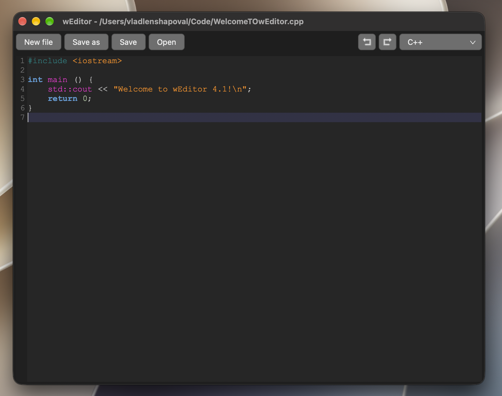
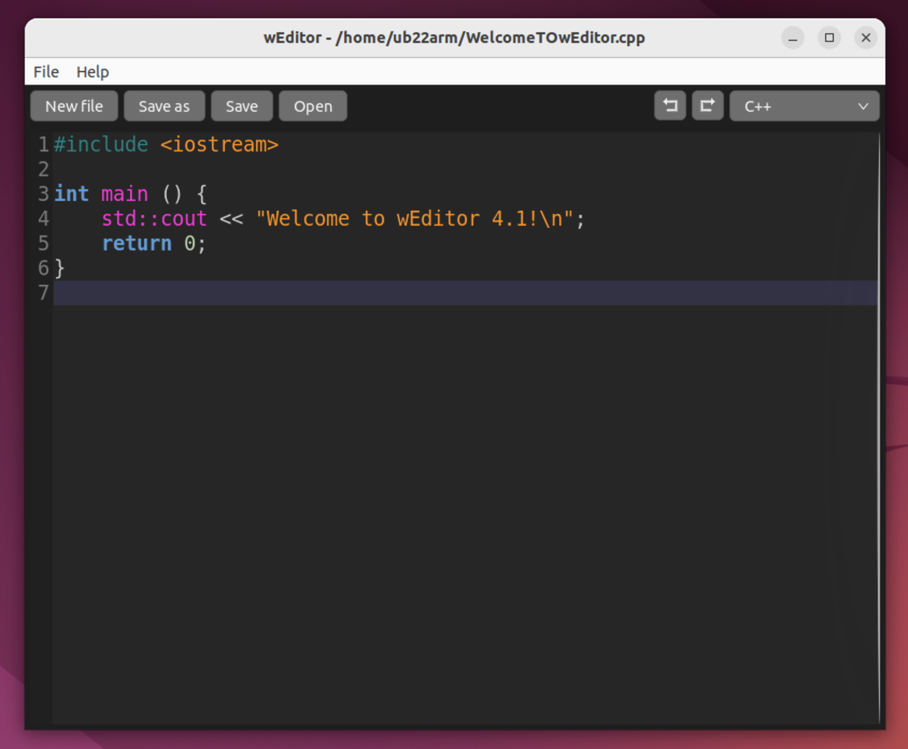
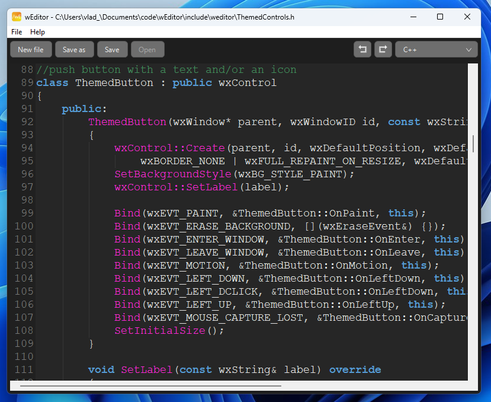
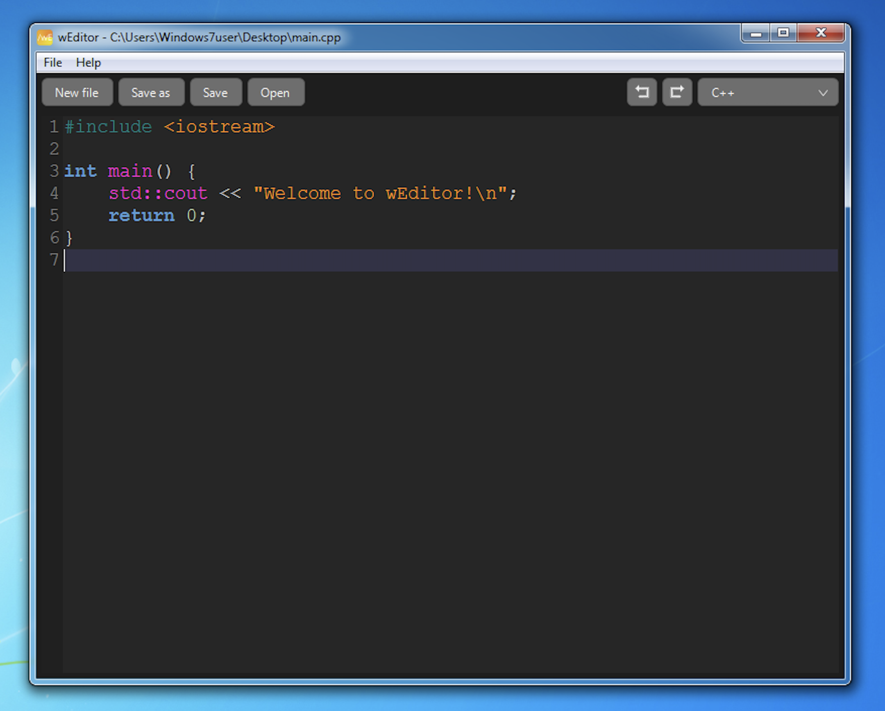

Description
wEditor - a free, open-source and cross-platform text and code editor made with C++ and the wxWidgets library. It is a native application that starts instantly, uses minimal memory and needs no installation - just download the binary and run it. Goals of the project: simplicity, speed and being lightweight. Currently wEditor is in beta - it is functional, but may contain bugs and unfinished features. The editor is designed and developed only by TheProjectDark.
Features
Supported platforms
| Platform | Architecture |
|---|---|
| Linux (Debian 11+ / Ubuntu 22.04+) | x86-64, ARM64 |
| Windows 7+ | x86-64, ARM64 (Windows 11) |
| macOS 12+ (Monterey and newer) | Intel (x86-64), Apple Silicon (ARM64) |
Screenshots



